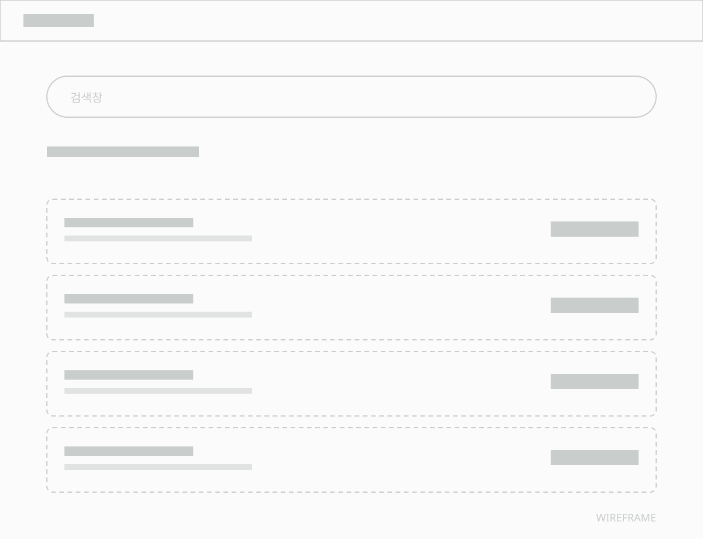
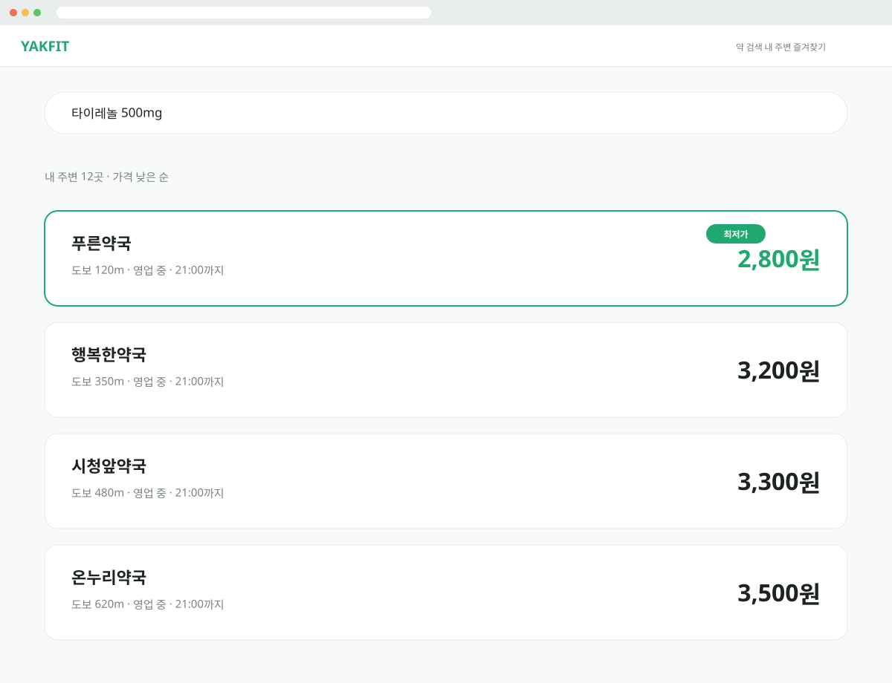

Web · 자체 제작2026Solo
YAKFIT
약 이름으로 근처 최저가 약국을 찾는 서비스
기획부터 디자인, 프론트엔드와 백엔드까지
혼자 처음부터 만든 웹사이트예요.
검색부터 약국 비교까지
한 번에 읽히는 흐름이 목표였어요.
Main screenSelf-built
Overview
같은 약, 약국마다 다른 가격.
어디가 가장 쌀까?
약값은 약국마다 다르지만
비교할 방법이 마땅치 않아요.
약 이름 하나로 근처 약국의 가격을
모아 보여주는 것에서 출발했어요.
- Role
- 기획 · UI 디자인 · 개발 (1인)
- Contribution
- 100% 단독 제작
- Scope
- 기획 → 디자인 → 프론트 → 백엔드·DB
- Period
- [ 0000.00 — 00.00 ]
- Stack
- Figma · React · Spring Boot · MyBatis
Result검색부터 최저가 확인까지 [ ]번 클릭
Features
주요 기능
01 —약 이름 검색약 이름을 입력하면
판매 중인 약국을 바로 찾아요.
02 —내 주변 약국현재 위치를 기준으로
가까운 약국을 지도에 보여줘요.
03 —최저가 비교같은 약의 약국별 가격을
낮은 순으로 정렬해 비교해요.
04 —약국 상세가격 · 위치 · 영업 정보를
한 화면에서 확인해요.
01 — 메인
02 — 약 검색
03 — 최저가 약국 목록
04 — 약국 상세
05 — 지도

WIREFRAME — 화면 설계
FINAL — 완성 화면
01검색창을 첫 화면 중앙으로[ 왜 이렇게 정했는지 한 줄 ]
03약국 카드 정보 순서 정리[ 정한 이유 한 줄 ]
Process
만든 과정
문제를 정하고, 구조를 짜고,
화면을 그린 뒤 직접 개발했어요.
01 —문제 정의약값을 비교할 때 불편한 지점을 찾고,
서비스의 목표를 정했어요.
02 —정보 구조검색 → 결과 → 약국 상세로 이어지는
흐름과 화면 수를 정리했어요.
03 —UI 디자인가격이 가장 먼저 읽히도록
글자 크기와 정렬, 색 규칙을 세웠어요.
04 —개발 · 연결프론트엔드와 백엔드·DB를 직접 연결해
실제로 동작하는 서비스로 만들었어요.
System
화면부터 데이터베이스까지
디자인한 화면을 직접 코드로 옮기고,
서버와 데이터베이스까지 혼자 연결했어요.
FrontendReact검색 · 지도 · 비교 화면
→Backend · APISpring Boot · MyBatis약 · 약국 · 가격 데이터 처리
→Database[ DB 이름 ]약 · 약국 · 가격 정보 저장
Retrospective
만들며 배운 것
01 —가장 어려웠던 점[ 막혔던 문제와
어떻게 해결했는지 한두 줄 ]
02 —다음에 더할 기능[ 가격 변동 알림, 즐겨찾기 등
확장하고 싶은 기능 ]
Design system
컴포넌트
Search bar
Pharmacy card
Price tag
Map pin
Search bar
Pharmacy card
Price tag
Map pin
Color
Typography
Button
Filter chip
Color
Typography
Button
Filter chip